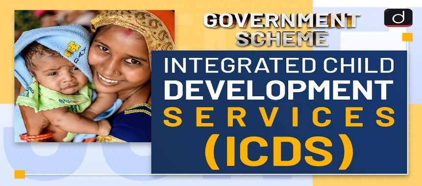

ICDS was launched by the Government of India in 1975 with the objective to improve the nutritional and health status of preschool children 0-6 years.
Objectives:
o To improve the nutritional and Health status of pre-school children in the age- group of 0-6 years.
o To lay the foundation of proper psychological development of the child.
o To reduce the incidence of mortality, morbidity, malnutrition and school drop-out.
o To achieve effective coordination of policy and implementation amongst the various departments to promote child development.
o To enhance the capability of the mother to look after the normal health and nutritional needs of the child through proper nutrition and health education.
Services
o Supplementary Nutrition.
o Health Check-up.
o Immunization.
o Referral Services.
o Early Childhood Care and Pre-school Education.
o Nutrition and Health Education.
It addresses all aspects of a child's development — physical, emotional, cognitive, and social — ensuring that no area is neglected, and interventions are coordinated across various sectors for maximum impact.
Key sectors include health (vaccinations, nutrition), education (early childhood learning), social services (support for vulnerable families), and community organizations that provide local support.
Children benefit from improved health, better education outcomes, and emotional well-being, while families receive support through access to essential services, such as healthcare and social support.
Communities can support by raising awareness about child development, participating in local programs, creating child-friendly environments, and providing resources to families in need.
Early childhood education plays a crucial role by fostering cognitive and social development, preparing children for formal schooling, and identifying developmental delays early.
Challenges include lack of coordination between sectors, insufficient funding, and limited access to services in remote or underserved areas, making it harder to provide comprehensive care.
The Integrated Child Development Services – A Flagship Adrift Kindle Edition
The rights of children have been recognized in the Constitution of India and various international legal instruments to which India is a party. However, 60 years after the Constitution, the status of Indian children in regard to health, nutrition and pre–primary education remains pretty dismal as shown by the Nalional Family Health Survey, 2005-06 and the UNICEIF"s "State oflhe World's Children, 2009.
READ
ICDS
Integrated Child Development Services (ICDS) Scheme - A Study of Anganwadi Workers and Mothers (Hardcover, Dr. Chhavi Bhatnagar)
READ
DK Taneja's Health Policies and Programmes in India
All India Institute of Hygiene and Public Health, Kolkata, Maulana Azad Medical College, New Delhi, Maulana Azad Medical College, New Delhi....
READ